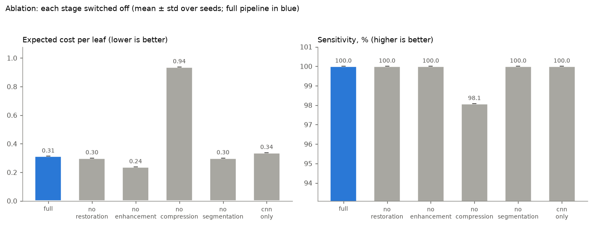
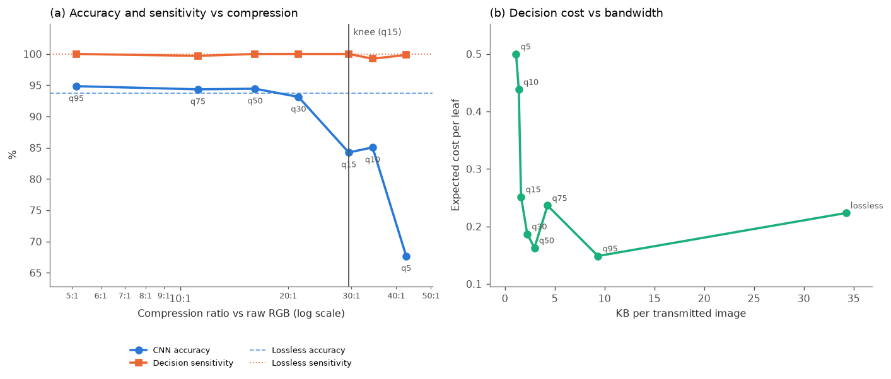
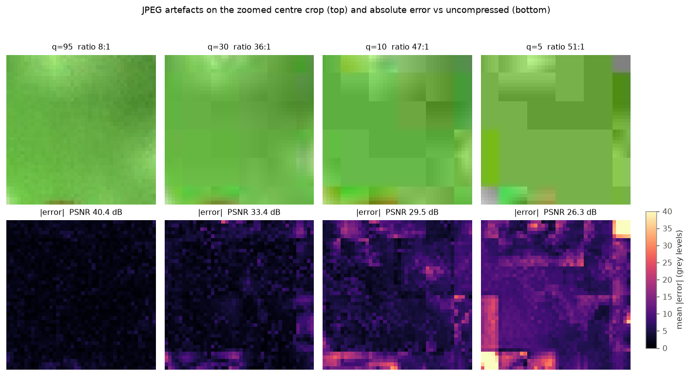
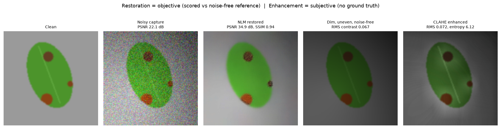
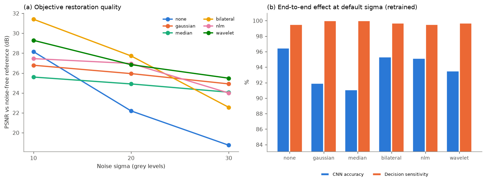
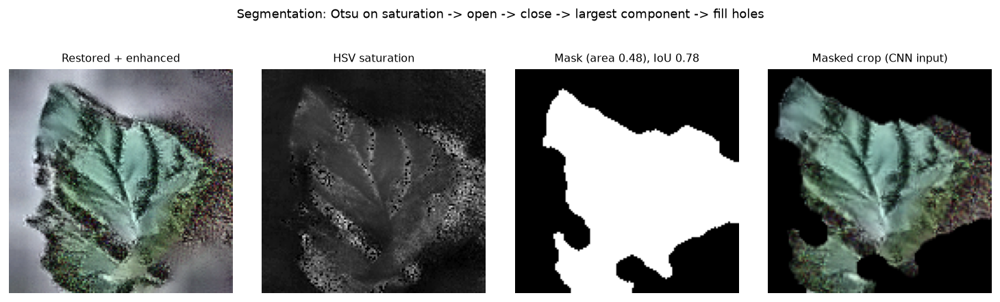

A field unit photographs tomato leaves under noise, uneven light and a thin uplink. A pipeline of image restoration, enhancement, JPEG transmission, segmentation and a small CNN feeds a decision agent that chooses CLEAR, FLAG or RE-IMAGE. Every stage can be switched off, and the experiments measure what each one is worth.
Gaussian, median, bilateral, non-local means or wavelet. Scored by PSNR and SSIM against the noise-free reference that the degradation model keeps.
CLAHE, histogram equalisation or gamma 0.7, applied to luminance only so lesion colour survives. There is no ground truth to score it against.
JPEG at quality q, decoded as the receiver sees it. Lossless mode encodes PNG only to measure size. Ratio = 128·128·3 / bytes.
Saturation, Otsu threshold, open 5×5, close 7×7 twice, largest component, hole fill. The leaf is masked, cropped and resized for the CNN.
With a calibrated P(diseased) = p, clearing costs p·50 in expectation and flagging costs (1−p)·1. Flagging is cheaper once p exceeds 1/51 ≈ 0.0196, the Bayes threshold. An uncertainty band [tlow, thigh] is chosen on validation by exhaustive search; the test set is simulated once.
Full pipeline vs each stage off, plus CNN only. Retrained per config and seed. Paired bootstrap CI on cost vs full.
Lossless, then q 95 → 5. Finds the knee where accuracy or sensitivity drops more than 1 pp, and the safe operating point.
PSNR, SSIM and latency per method at σ 10/20/30, then end-to-end effect on the decision.
Normal vs harsh lighting, safety gates on vs off. Tracks misses, gate failures and segmentation IoU.
These numbers come from a smoke test, not from the real dataset. They are from --quick on synthetic leaves: 200 training images, 2 epochs, one seed. The CNN is barely trained (≈35% accuracy at the 0.5 threshold), so the comparisons below are not findings. They show that every experiment runs end to end. Run the full experiments on PlantVillage for real results.
| Config | Cost / leaf | Sensitivity | CNN acc. | Δ cost vs full | 95% CI | Measurable |
|---|---|---|---|---|---|---|
| full | 0.312 | 1.000 | 0.350 | 0.000 | [0.000, 0.000] | — |
| no_restoration | 0.300 | 1.000 | 0.375 | −0.013 | [−0.075, 0.050] | no |
| no_enhancement | 0.237 | 1.000 | 0.350 | −0.075 | [−0.150, −0.025] | yes |
| no_compression | 0.938 | 0.981 | 0.350 | 0.625 | [0.000, 1.875] | no |
| no_segmentation | 0.300 | 1.000 | 0.350 | −0.013 | [−0.062, 0.037] | no |
| cnn_only | 0.338 | 1.000 | 0.350 | 0.025 | [−0.025, 0.075] | no |

| Setting | Ratio | KB / image | PSNR (dB) | Sensitivity | Cost / leaf |
|---|---|---|---|---|---|
| lossless (PNG) | 2.1 : 1 | 23.2 | — | 0.981 | 0.938 |
| q75 | 21.4 : 1 | 2.25 | 36.7 | 0.962 | 1.575 |
| q30 | 34.5 : 1 | 1.39 | 33.8 | 1.000 | 0.312 |
| q5 | 49.9 : 1 | 0.96 | 26.3 | 0.962 | 1.587 |


| Denoiser (σ = 20) | PSNR (dB) | SSIM | ms / image |
|---|---|---|---|
| none | 22.16 | 0.231 | 0.00 |
| median 5×5 | 32.74 | 0.802 | 0.32 |
| non-local means | 35.32 | 0.949 | 74.1 |



Harsh lighting (illumination floor 0.12) triggered no gate failures on synthetic leaves, so gates on and off gave identical results here. On real data, lower the illumination ceiling or raise the exposure gate's floor if the stress test should exercise the gates.
# setup (Windows; use source .venv/bin/activate on macOS/Linux) python -m venv .venv .venv\Scripts\activate pip install -r requirements.txt # smoke test, no download python -m src.experiments --exp all --quick --source synthetic # real PlantVillage (downloads about 2 GB once) python -m src.experiments --exp all
The full ablation trains 18 CNNs, about 1–2 hours on a CPU. Set experiments.seeds: [42] in config.yaml to cut that to 6.
PlantVillage has about 54,000 leaf images in 38 classes on a plain background. This project uses the 10 tomato classes: Tomato___healthy is label 0, and the 9 diseases merged are label 1. All healthy images are kept, with at most twice as many diseased. Splits are grouped by physical leaf so no leaf appears in two splits.